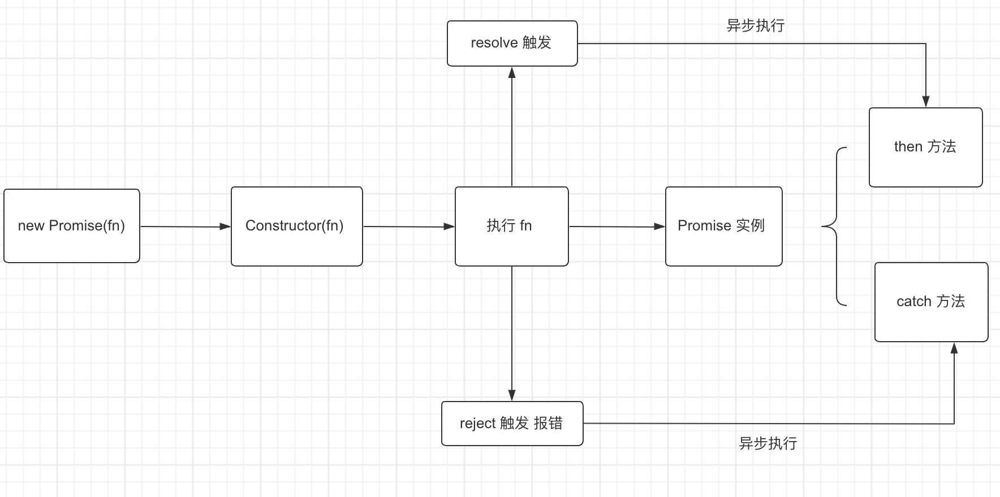

# Promise
- 参考文档
Promises/A+规范:https://www.ituring.com.cn/article/66566
# 定义
- Promise 是
异步编程的一种解决方案, 主要解决回调函数或者回调事件的写法更加优雅。 - Promise 的当前状态必须为以下三种状态中的一种:
- 等待态（Pending）: 处于等待态时，promise 需满足以下条件：
- 可以迁移至执行态或拒绝态
- 执行态（Fulfilled）: 处于执行态时，promise 需满足以下条件：
- 不能迁移至其他任何状态
- 必须拥有一个
不可变的终值
- 拒绝态（Rejected）: 处于拒绝态时，promise 需满足以下条件：
- 不能迁移至其他任何状态
- 必须拥有一个
不可变的据因
- 等待态（Pending）: 处于等待态时，promise 需满足以下条件：
# 流程图

# Promise 自身的状态
state存放当前的状态。value存放当前状态的值。then方法, 返回的也是一个 Promise。catch方法。finally方法。静态方法, 如: Promise.all、 Promise.resolve。
# 手写 Promise 的实现
实现一个 promise, 在 setTimeout 中去 resolve
// promise 的三种状态 const PENDING = 'PENDING'; const FULFILLED = 'FULFILLED'; const REJECTED = 'REJECTED'; class MyPromise { constructor(fn){ this.state = PENDING; this.value = undefined; this.resolvedCallbacks = []; const resolve = (val) => { this.state = FULFILLED; this.value = val; // 执行所有的 then 方法 this.resolvedCallbacks.map(fn => fn(val)); }; const reject = (val) => { this.state = REJECTED; this.value = val; }; fn(resolve, reject); } then(onFulfilled) { if(this.state === PENDING){ this.resolvedCallbacks.push(onFulfilled); } } } // 调用实现的MyPromise const promise = new MyPromise((resolve, reject) => { setTimeout(() => { // ajax 获取数据 resolve('step1'); }, 1000); }).then(data => { console.log('获取到数据: ', data); })实现一个 promise, 直接同步 resolve
// promise 的三种状态 const PENDING = 'PENDING'; const FULFILLED = 'FULFILLED'; const REJECTED = 'REJECTED'; class MyPromise { constructor(fn){ this.state = PENDING; this.value = undefined; this.resolvedCallbacks = []; const resolve = (val) => { setTimeout(() => { // 在resolve中执行异步方法 this.state = FULFILLED; this.value = val; // 执行所有的 then 方法 this.resolvedCallbacks.map(fn => fn(val)); }); }; const reject = (val) => { this.state = REJECTED; this.value = val; }; fn(resolve, reject); } then(onFulfilled) { if(this.state === PENDING){ this.resolvedCallbacks.push(onFulfilled); } } } const promise = new MyPromise((resolve, reject) => { resolve('step2'); }).then(data => { console.log('获取到数据: ', data); })实现一个 promise，防止 resolve 多次
// promise 的三种状态 const PENDING = 'PENDING'; const FULFILLED = 'FULFILLED'; const REJECTED = 'REJECTED'; class MyPromise { constructor(fn){ this.state = PENDING; this.value = undefined; this.resolvedCallbacks = []; const resolve = (val) => { setTimeout(() => { if(this.state === PENDING) { // 判断当前状态，为PENDING 才执行resolve this.state = FULFILLED; this.value = val; // 执行所有的 then 方法 this.resolvedCallbacks.map(fn => fn(val)); } }); }; const reject = (val) => { this.state = REJECTED; this.value = val; }; fn(resolve, reject); } then(onFulfilled) { if(this.state === PENDING){ this.resolvedCallbacks.push(onFulfilled); } } } const promise = new MyPromise((resolve, reject) => { resolve('step3'); resolve('step3.1'); }).then(data => { console.log('获取到数据: ', data); })实现一个 promise，可以让 then 方法链式调用(then 完成之后应该继续返回 promise，才可以继续使用 then)
// promise 的三种状态 const PENDING = 'PENDING'; const FULFILLED = 'FULFILLED'; const REJECTED = 'REJECTED'; class MyPromise { constructor(fn){ this.state = PENDING; this.value = undefined; this.resolvedCallbacks = []; const resolve = (val) => { setTimeout(() => { if(this.state === PENDING) { this.state = FULFILLED; this.value = val; // 执行所有的 then 方法 this.resolvedCallbacks.map(fn => fn()); // 此处不用传参数了 } }); }; const reject = (val) => { this.state = REJECTED; this.value = val; }; fn(resolve, reject); } then(onFulfilled) { if(this.state === PENDING){ return new MyPromise((resolve, reject) => { // return 一个 promise 才支持链式调用 this.resolvedCallbacks.push(() =>{ const x = onFulfilled(this.value); resolve(x); }); }) } } }实现一个 promise，支持空 then 函数
// promise 的三种状态 const PENDING = 'PENDING'; const FULFILLED = 'FULFILLED'; const REJECTED = 'REJECTED'; class MyPromise { constructor(fn){ this.state = PENDING; this.value = undefined; this.resolvedCallbacks = []; const resolve = (val) => { setTimeout(() => { if(this.state === PENDING) { this.state = FULFILLED; this.value = val; // 执行所有的 then 方法 this.resolvedCallbacks.map(fn => fn()); } }); }; const reject = (val) => { this.state = REJECTED; this.value = val; }; fn(resolve, reject); } then(onFulfilled = val => val) { //执行透传 if(this.state === PENDING){ return new MyPromise((resolve, reject) => { this.resolvedCallbacks.push(() =>{ const x = onFulfilled(this.value); resolve(x); }); }) } } } const promise = new MyPromise((resolve, reject) => { resolve('step5'); }).then(data => { console.log('获取到数据: ', data); return 'step5.1' }) .then() .then(data => { console.log('获取到数据: ', data); })实现一个 promise，支持 then 传递 thenable 对象
// promise 的三种状态 const PENDING = 'PENDING'; const FULFILLED = 'FULFILLED'; const REJECTED = 'REJECTED'; function promiseResolutionProcedure(promise2, x, resolve, reject){ // 判断 x 是否带有 then 的对象或者方法, 即判断 thenable 对象 if((typeof x === 'object' || typeof x === 'function') && x != null){ if(typeof x.then === 'function'){ x.then(y=>{ promiseResolutionProcedure(promise2, y, resolve, reject); }, reject); } else { resolve(x); } } else { resolve(x); } } class MyPromise { constructor(fn){ this.state = PENDING; this.value = undefined; this.resolvedCallbacks = []; const resolve = (val) => { setTimeout(() => { if(this.state === PENDING) { this.state = FULFILLED; this.value = val; // 执行所有的 then 方法 this.resolvedCallbacks.map(fn => fn()); } }); }; const reject = (val) => { this.state = REJECTED; this.value = val; }; fn(resolve, reject); } then(onFulfilled = val => val) { if(this.state === PENDING){ const promise2 = new MyPromise((resolve, reject) => { this.resolvedCallbacks.push(() =>{ const x = onFulfilled(this.value); promiseResolutionProcedure(promise2, x, resolve, reject); }); }); return promise2; } } } const promise = new MyPromise((resolve, reject) => { resolve('step6'); }).then(data => { console.log('获取到数据: ', data); return { then(r,j) { r('step6.1') } } }) .then(data => { console.log('获取到数据: ', data); })实现一个 promise，支持 then 传递 promise 对象
// promise 的三种状态 const PENDING = 'PENDING'; const FULFILLED = 'FULFILLED'; const REJECTED = 'REJECTED'; function promiseResolutionProcedure(promise2, x, resolve, reject){ // 处理 promise 对象 if(x instanceof MyPromise){ if(x.state === PENDING){ x.then(y=>{ promiseResolutionProcedure(promise2, y, resolve, reject); }, reject); } else { x.state === FULFILLED && resolve(x.value); x.state === REJECTED && reject(x.value); } } // 判断 x 是否带有 then 的对象或者方法, 即判断 thenable 对象 if((typeof x === 'object' || typeof x === 'function') && x != null){ if(typeof x.then === 'function'){ x.then(y=>{ promiseResolutionProcedure(promise2, y, resolve, reject); }, reject); } else { resolve(x); } } else { resolve(x); } } class MyPromise { constructor(fn){ this.state = PENDING; this.value = undefined; this.resolvedCallbacks = []; const resolve = (val) => { setTimeout(() => { if(this.state === PENDING) { this.state = FULFILLED; this.value = val; // 执行所有的 then 方法 this.resolvedCallbacks.map(fn => fn()); } }); }; const reject = (val) => { this.state = REJECTED; this.value = val; }; fn(resolve, reject); } then(onFulfilled = val => val) { if(this.state === PENDING){ const promise2 = new MyPromise((resolve, reject) => { this.resolvedCallbacks.push(() =>{ const x = onFulfilled(this.value); promiseResolutionProcedure(promise2, x, resolve, reject); }); }); return promise2; } } } const promise = new MyPromise((resolve, reject) => { resolve('step7'); }).then(data => { console.log('获取到数据: ', data); return new MyPromise((resolve) => { resolve('7.1'); }) }) .then(data => { console.log('获取到数据: ', data); })实现一个 promise，支持 resolve 传递 promise 对象
// promise 的三种状态 const PENDING = 'PENDING'; const FULFILLED = 'FULFILLED'; const REJECTED = 'REJECTED'; function promiseResolutionProcedure(promise2, x, resolve, reject){ // 处理 promise 对象 if(x instanceof MyPromise){ if(x.state === PENDING){ x.then(y=>{ promiseResolutionProcedure(promise2, y, resolve, reject); }, reject); } else { x.state === FULFILLED && resolve(x.value); x.state === REJECTED && reject(x.value); } } // 判断 x 是否带有 then 的对象或者方法, 即判断 thenable 对象 if((typeof x === 'object' || typeof x === 'function') && x != null){ if(typeof x.then === 'function'){ x.then(y=>{ promiseResolutionProcedure(promise2, y, resolve, reject); }, reject); } else { resolve(x); } } else { resolve(x); } } class MyPromise { constructor(fn){ this.state = PENDING; this.value = undefined; this.resolvedCallbacks = []; const resolve = (val) => { if(typeof val === 'object' || typeof val === 'function'){ //resolve 中包含 promise 的处理判断 promiseResolutionProcedure(this, val, resolve, reject); return; } setTimeout(() => { if(this.state === PENDING) { this.state = FULFILLED; this.value = val; // 执行所有的 then 方法 this.resolvedCallbacks.map(fn => fn()); } }); }; const reject = (val) => { this.state = REJECTED; this.value = val; }; fn(resolve, reject); } then(onFulfilled = val => val) { if(this.state === PENDING){ const promise2 = new MyPromise((resolve, reject) => { this.resolvedCallbacks.push(() =>{ const x = onFulfilled(this.value); promiseResolutionProcedure(promise2, x, resolve, reject); }); }); return promise2; } } } const promise = new MyPromise((resolve, reject) => { resolve(new Promise((resolve) => { resolve('step8'); })) }) .then(data => { console.log('获取到数据: ', data); })实现一个 promise，处理 then 中循环promise 对象。
// promise 的三种状态 const PENDING = 'PENDING'; const FULFILLED = 'FULFILLED'; const REJECTED = 'REJECTED'; function promiseResolutionProcedure(promise2, x, resolve, reject){ // 循环引用 promise 的判断 if(promise2 === x){ throw new Error('循环引用 promise'); } // 处理 promise 对象 if(x instanceof MyPromise){ if(x.state === PENDING){ x.then(y=>{ promiseResolutionProcedure(promise2, y, resolve, reject); }, reject); } else { x.state === FULFILLED && resolve(x.value); x.state === REJECTED && reject(x.value); } } // 判断 x 是否带有 then 的对象或者方法, 即判断 thenable 对象 if((typeof x === 'object' || typeof x === 'function') && x != null){ if(typeof x.then === 'function'){ x.then(y=>{ promiseResolutionProcedure(promise2, y, resolve, reject); }, reject); } else { resolve(x); } } else { resolve(x); } } class MyPromise { constructor(fn){ this.state = PENDING; this.value = undefined; this.resolvedCallbacks = []; const resolve = (val) => { if(typeof val === 'object' || typeof val === 'function'){ //resolve 中包含 promise 的处理判断 promiseResolutionProcedure(this, val, resolve, reject); return; } setTimeout(() => { if(this.state === PENDING) { this.state = FULFILLED; this.value = val; // 执行所有的 then 方法 this.resolvedCallbacks.map(fn => fn()); } }); }; const reject = (val) => { this.state = REJECTED; this.value = val; }; fn(resolve, reject); } then(onFulfilled = val => val) { if(this.state === PENDING){ const promise2 = new MyPromise((resolve, reject) => { this.resolvedCallbacks.push(() =>{ const x = onFulfilled(this.value); promiseResolutionProcedure(promise2, x, resolve, reject); }); }); return promise2; } } } const promise = new MyPromise((resolve, reject) => { resolve('step9'); }) const promise1 = promise.then(data => { return promise1; })实现一个 promise, 支持静态方法 Promise.all
// promise 的三种状态 const PENDING = 'PENDING'; const FULFILLED = 'FULFILLED'; const REJECTED = 'REJECTED'; function promiseResolutionProcedure(promise2, x, resolve, reject){ // 循环引用 promise 的判断 if(promise2 === x){ throw new Error('循环引用 promise'); } // 处理 promise 对象 if(x instanceof MyPromise){ if(x.state === PENDING){ x.then(y=>{ promiseResolutionProcedure(promise2, y, resolve, reject); }, reject); } else { x.state === FULFILLED && resolve(x.value); x.state === REJECTED && reject(x.value); } } // 判断 x 是否带有 then 的对象或者方法, 即判断 thenable 对象 if((typeof x === 'object' || typeof x === 'function') && x != null){ if(typeof x.then === 'function'){ x.then(y=>{ promiseResolutionProcedure(promise2, y, resolve, reject); }, reject); } else { resolve(x); } } else { resolve(x); } } class MyPromise { // 实现 promise all static all(promiseArray) { return new MyPromise((resolve, reject) => { const resultArray = []; let successTimes = 0; function processResult(index, data) { resultArray[index] = data; successTimes++; if(successTimes === promiseArray.length){ // 处理成功 resolve(resultArray) } } for(let i=0; i < promiseArray.length; i++){ promiseArray[i].then(data => { processResult(i, data) }, err => { // 处理失败 reject(err) }) } }) } constructor(fn){ this.state = PENDING; this.value = undefined; this.resolvedCallbacks = []; const resolve = (val) => { //resolve 中包含 promise 的处理判断 // && 此判断是为了防止执行 all 方法, 报 Maximum call stack size exceeded(超过最大调用堆栈大小) if((typeof val === 'object' || typeof val === 'function') && val.then){ promiseResolutionProcedure(this, val, resolve, reject); return; } setTimeout(() => { if(this.state === PENDING) { this.state = FULFILLED; this.value = val; // 执行所有的 then 方法 this.resolvedCallbacks.map(fn => fn()); } }); }; const reject = (val) => { this.state = REJECTED; this.value = val; }; fn(resolve, reject); } then(onFulfilled = val => val) { if(this.state === PENDING){ const promise2 = new MyPromise((resolve, reject) => { this.resolvedCallbacks.push(() =>{ const x = onFulfilled(this.value); promiseResolutionProcedure(promise2, x, resolve, reject); }); }); return promise2; } } } const p1 = new Promise(resolve => {resolve(1)}); const p2 = new Promise(resolve => {resolve(2)}); MyPromise.all([p1, p2]).then(dataList => { console.log('dataList', dataList); })实现一个 promise, 支持 reject 和 catch。
// promise 的三种状态 const PENDING = 'PENDING'; const FULFILLED = 'FULFILLED'; const REJECTED = 'REJECTED'; function promiseResolutionProcedure(promise2, x, resolve, reject){ // 循环引用 promise 的判断 if(promise2 === x){ throw new Error('循环引用 promise'); } // 处理 promise 对象 if(x instanceof MyPromise){ if(x.state === PENDING){ x.then(y=>{ promiseResolutionProcedure(promise2, y, resolve, reject); }, reject); } else { x.state === FULFILLED && resolve(x.value); x.state === REJECTED && reject(x.value); } } // 判断 x 是否带有 then 的对象或者方法, 即判断 thenable 对象 if((typeof x === 'object' || typeof x === 'function') && x != null){ if(typeof x.then === 'function'){ x.then(y=>{ promiseResolutionProcedure(promise2, y, resolve, reject); }, reject); } else { resolve(x); } } else { resolve(x); } } class MyPromise { // 实现 promise all static all(promiseArray) { return new MyPromise((resolve, reject) => { const resultArray = []; let successTimes = 0; function processResult(index, data) { resultArray[index] = data; successTimes++; if(successTimes === promiseArray.length){ // 处理成功 resolve(resultArray) } } for(let i=0; i < promiseArray.length; i++){ promiseArray[i].then(data => { processResult(i, data) }, err => { // 处理失败 reject(err) }) } }) } constructor(fn){ this.state = PENDING; this.value = undefined; this.resolvedCallbacks = []; this.rejectedCallbacks = []; // 定义需要执行的 reject const resolve = (val) => { //resolve 中包含 promise 的处理判断 // && 此判断是为了防止执行 all 方法, 报 Maximum call stack size exceeded(超过最大调用堆栈大小) if((typeof val === 'object' || typeof val === 'function') && val.then){ promiseResolutionProcedure(this, val, resolve, reject); return; } setTimeout(() => { if(this.state === PENDING) { this.state = FULFILLED; this.value = val; // 执行所有的 then 方法 this.resolvedCallbacks.map(fn => fn()); } }); }; const reject = (val) => { // 实现reject if((typeof val === 'object' || typeof val === 'function') && val.then){ promiseResolutionProcedure(this, val, resolve, reject); return; } setTimeout(() => { if(this.state === PENDING) { this.state = REJECTED; this.value = val; // 执行所有的 then 方法 this.rejectedCallbacks.map(fn => fn()); } }); }; fn(resolve, reject); } then(onFulfilled = val => val, onRejected = err => { throw new Error(err); }) { if(this.state === PENDING){ const promise2 = new MyPromise((resolve, reject) => { this.resolvedCallbacks.push(() =>{ const x = onFulfilled(this.value); promiseResolutionProcedure(promise2, x, resolve, reject); }); this.rejectedCallbacks.push(() =>{ const x = onRejected(this.value); promiseResolutionProcedure(promise2, x, resolve, reject); }); }); return promise2; } } } const promise = new MyPromise((resolve, reject) => { reject('step11'); }).then(data => { console.log('resolve 值: ', data); }, rej => { console.log('reject 值: ', rej); })实现一个 promise, 支持处理完成态 或 失败态的 then。
// promise 的三种状态 const PENDING = 'PENDING'; const FULFILLED = 'FULFILLED'; const REJECTED = 'REJECTED'; function promiseResolutionProcedure(promise2, x, resolve, reject){ // 循环引用 promise 的判断 if(promise2 === x){ throw new Error('循环引用 promise'); } // 处理 promise 对象 if(x instanceof MyPromise){ if(x.state === PENDING){ x.then(y=>{ promiseResolutionProcedure(promise2, y, resolve, reject); }, reject); } else { x.state === FULFILLED && resolve(x.value); x.state === REJECTED && reject(x.value); } } // 判断 x 是否带有 then 的对象或者方法, 即判断 thenable 对象 if((typeof x === 'object' || typeof x === 'function') && x != null){ if(typeof x.then === 'function'){ x.then(y=>{ promiseResolutionProcedure(promise2, y, resolve, reject); }, reject); } else { resolve(x); } } else { resolve(x); } } class MyPromise { // 实现 promise all static all(promiseArray) { return new MyPromise((resolve, reject) => { const resultArray = []; let successTimes = 0; function processResult(index, data) { resultArray[index] = data; successTimes++; if(successTimes === promiseArray.length){ // 处理成功 resolve(resultArray) } } for(let i=0; i < promiseArray.length; i++){ promiseArray[i].then(data => { processResult(i, data) }, err => { // 处理失败 reject(err) }) } }) } constructor(fn){ this.state = PENDING; this.value = undefined; this.resolvedCallbacks = []; this.rejectedCallbacks = []; // 定义需要执行的 reject const resolve = (val) => { //resolve 中包含 promise 的处理判断 // && 此判断是为了防止执行 all 方法, 报 Maximum call stack size exceeded(超过最大调用堆栈大小) if((typeof val === 'object' || typeof val === 'function') && val.then){ promiseResolutionProcedure(this, val, resolve, reject); return; } setTimeout(() => { if(this.state === PENDING) { this.state = FULFILLED; this.value = val; // 执行所有的 then 方法 this.resolvedCallbacks.map(fn => fn()); } }); }; const reject = (val) => { // 实现reject if((typeof val === 'object' || typeof val === 'function') && val.then){ promiseResolutionProcedure(this, val, resolve, reject); return; } setTimeout(() => { if(this.state === PENDING) { this.state = REJECTED; this.value = val; // 执行所有的 then 方法 this.rejectedCallbacks.map(fn => fn()); } }); }; fn(resolve, reject); } then(onFulfilled = val => val, onRejected = err => { throw new Error(err); }) { let promise2 = null; // 需要把 promise 提取出来 // 处理已经完成的 promise if(this.state === FULFILLED){ promise2 = new MyPromise((resolve, reject) => { const x = onFulfilled(this.value); promiseResolutionProcedure(promise2, x, resolve, reject); }) } // 处理已经完成的 promise if(this.state === REJECTED){ promise2 = new MyPromise((resolve, reject) => { const x = onRejected(this.value); promiseResolutionProcedure(promise2, x, resolve, reject); }) } // 处理尚未完成的 promise if(this.state === PENDING){ promise2 = new MyPromise((resolve, reject) => { this.resolvedCallbacks.push(() =>{ const x = onFulfilled(this.value); promiseResolutionProcedure(promise2, x, resolve, reject); }); this.rejectedCallbacks.push(() =>{ const x = onRejected(this.value); promiseResolutionProcedure(promise2, x, resolve, reject); }); }); } return promise2; // 每一个 if 都会返回 promise，所以将 promise 提取出来 } } const promise = new MyPromise((resolve, reject) => { resolve('step12'); }) setTimeout(() => { promise.then(data => { console.log('step12: ', data); }); promise.then(data => { console.log('step12: ', data); }); }, 1000)